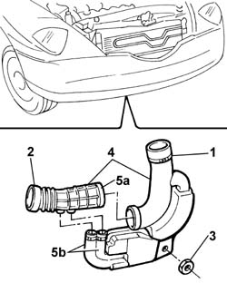

1048A54 TURBOCHARGER air inlet HOSE from rigid pipe - R.R.
- Path
- Procedures > 10 ENGINE > 1048 ENGINE AIR SUPPLY CIRCUIT > 1048A VACUUM AIR CIRCUIT > 1048A54 TURBOCHARGER air inlet HOSE from rigid pipe - R.R.
- Kind
- repair procedure (removal / refitting; the operation number is the code)
- Applies to
- engines: 2.4 JTD 10V; all production periods
- Interactive page
- https://sloeber94.github.io/elrnDB-lThss/en/#/100226
Applies to: all engines; all production periods
 Removing
Removing
 Refitting
RefittingSee in Op. 7055B54 PROTECTION/GUARD under engine - R.R.
1. Disconnect the rigid section of the resonator pipe from the hose joined to the air filter casing.
2. Disconnect the flexible air inlet pipe from the turbocharger.
3. Undo the nut fixing the resonator.
4. Remove the turbocharger air intake pipe, complete with resonator, from the lower part of the engine compartment.
5. With the assembly at the bench, disconnect the air intake hose from the resonator acting on the retaining bands (5a) and (5b).

Applies to: all engines; all production periods
Refitting
Removing- With the assembly at the bench, fit the turbocharger air intake hose, connecting it to the resonator.
- Position the assembly in the engine compartment and connect it to the turbocharger and to the hose joined to the filter casing.
- Tighten the fixing nut.